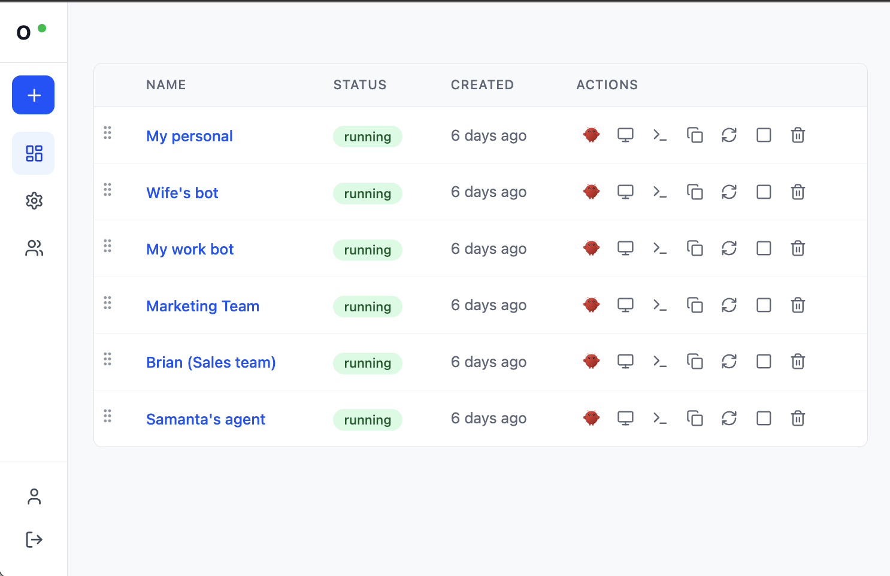
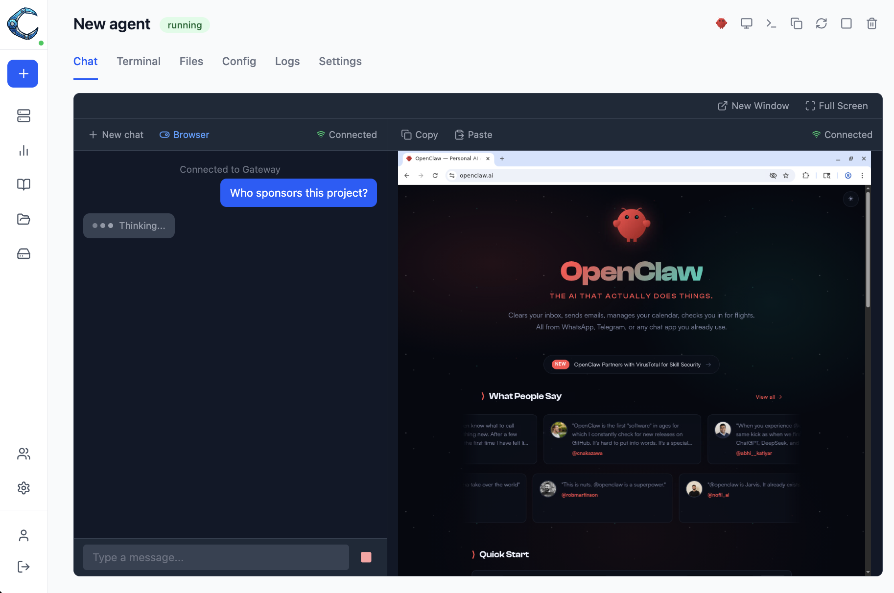
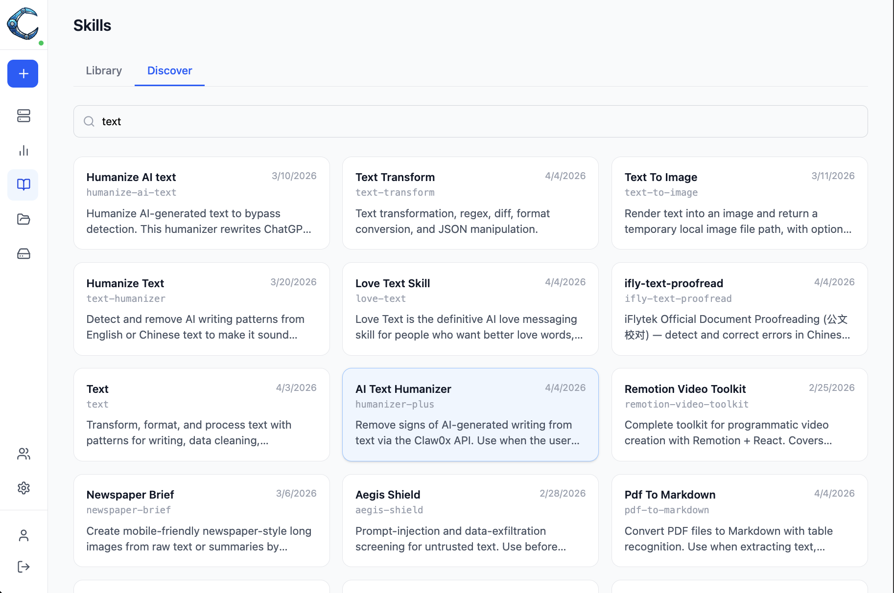
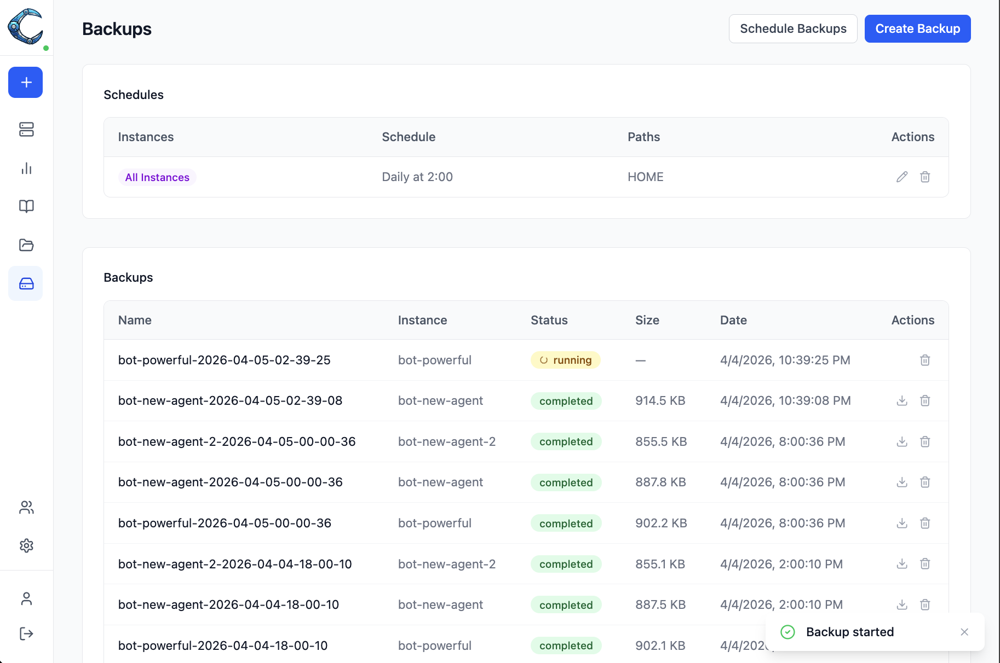
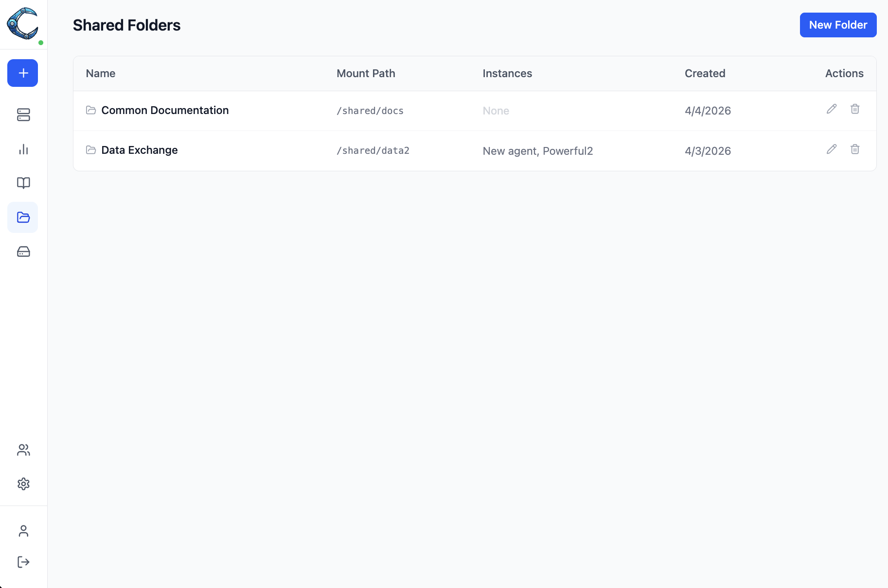

Easy-to-use orchestrator for OpenClaw
Run multiple AI agents from a single dashboard. Each gets its own browser, terminal, and persistent storage.

Manage your entire fleet of AI agents from one place.
Spin up new agent workspaces, start/stop them, or remove them when done.
Send instructions and have a conversation with the AI agent in each instance.
See what the agent is doing in Chrome in real time, or take control yourself.
Browse and manage the files in each instance's workspace.
Stream live logs to monitor what's happening inside an instance.
Package reusable prompts as skills and deploy them to instances in one click. Discover community skills on Clawhub.
Each agent gets a virtual key — real API credentials stay in the control plane and are never exposed inside containers.
A self-contained OpenClaw workspace. When you create one, Claworc spins up an isolated container that includes:
OpenClaw with configured Large Language Models
Watch or control it live through your own browser
Command-line operations
Browse, upload, and edit files
Files survive restarts and redeployments
Instances are fully isolated from each other, each with its own file system. They are monitored by systemd and automatically restarted if they crash.
Chat with your OpenClaw agent while watching it work. The webchat panel runs side by side with the embedded browser, so you can send instructions and see the agent act on them in real time.
Chat and browser share the screen — toggle between split and full-chat views.
See the agent navigate, click, and type in the browser as you chat.

Claworc has a multi-user interface with two roles:
Create, configure, and manage all instances.
Access only the instances assigned to them.
Biometric identification is supported for authentication.
Package reusable instructions and deploy them to any instance with one click. Skills are zip archives containing a SKILL.md — a prompt that gets injected into the agent's context.
Package any workflow as a skill and upload it to your private library.
Search the Clawhub community registry and deploy skills directly from search results.
Select which instances should receive a skill and deploy to all of them simultaneously.

Claworc acts as a proxy between your agents and LLM providers. Each OpenClaw instance gets a virtual key — your real API credentials never leave the control plane.
A container breakout or log leak cannot expose your provider API keys.
Every request is logged with token counts and cost, broken down by instance and provider.
Remove a provider from one instance without affecting others or rotating your real key.
Create compressed snapshots of your instances on demand or on a schedule. Restore to any running instance with one click.
Set a cron schedule to back up one, several, or all instances automatically.
Download archives locally or restore them to any running instance.

Mount a named volume into multiple instances so they can share files in real time. Useful for shared datasets, collaborative workspaces, or common configuration.
Files written by one instance are immediately visible to all others that share the folder.
Map any combination of instances to a folder and change mappings at any time.

Claworc runs on Docker for local setups or Kubernetes for production. The control plane is a single 20 MB binary.
Linux & macOS
curl -fsSL https://raw.githubusercontent.com/gluk-w/claworc/main/install.sh | bash
For Kubernetes production deployments with full control over configuration.
Helm instructions